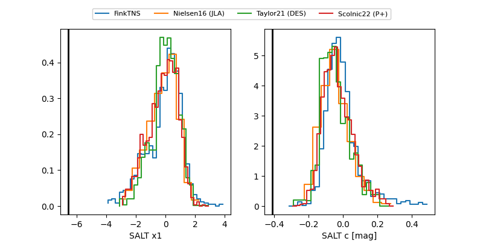

FINK: ZTF25abmwwga
Lasair: ZTF25abmwwga
ALeRCE: ZTF25abmwwga
TNS: 2025wgb
YSE: 2025wgb
ZTF25abmwwga (ztf,fink)
2025wgb (tns,yse)
ATLAS25ktk (atlas)
equatorial (ra, dec) = (62.7657,+21.06390)
galactic (l, b) = (173.1726,-21.77755)

last atlasc=18.19, atlaso=18.11, ztfg=19.04, ztfr=18.79
1 atlasc, 4 atlaso, 6 ztfg, 5 ztfr detections